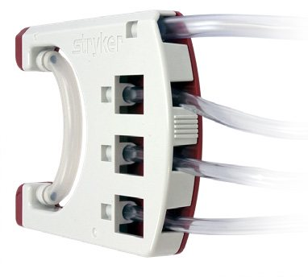
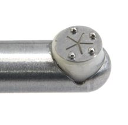
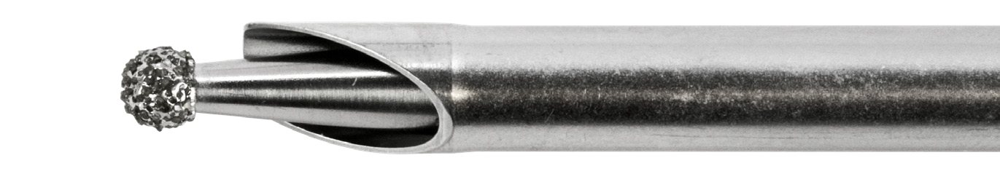

01
Hip Arthroscopy · 한눈에 보기
영상 → 접근 → Capsulotomy → Osteoplasty → Repair까지, 단계별로 쓰이는 Stryker 구성입니다.
① Visualize1788 4K · 165mm Long Scope
② Access5.8mm Long Cannula · Bridge Cannula
③ CapsulotomySERFAS XL Hook · 50-S
④ OsteoplastyLong Hip Burs · Diamond Hip Bur
⑤ RepairICONIX 1.4mm · Knotless Anchors


Hip Point. 깊은 관절은 더 멀리 보고(165mm Scope), 좁은 공간에서는 더 자유롭게(Bridge Cannula) — 영상·RF·Burs·앵커가 하나의 플랫폼으로 이어집니다.
02
영상 · Visualization
1788 ATH × Hip 특화 구성
| Precision 4K Eyepiece Long Scope | 사양 |
|---|---|
| Diameter | Ø 4.0 mm |
| Working length | 165 mm (Standard 140mm 대비 +25mm) |
| Viewing angle | 0° · 30° · 70° |
| FOV | 105° |
- Eyepiece 타입 — 1788 4K Coupler · 기존 1688 AIM 4K Coupler 모두 연결
- 전용 5.8 mm Long Cannula · Trocar · Obturator
- Bridge Cannula: Working ⇄ Viewing 포털 간 Scope·기구 전환을 간편하게 → 반복 재삽입 부담 최소화
- 10-bit 4K · Tone Mode(8단계) · 일체형 Camera Head로 Posterior까지 선명하게, 포깅 스트레스 ↓


03
관류 · CrossFlow
Inflow · Outflow 통합 관리와 Shaver·RF 연동
- 관절별 압력·유량 Surgeon profile 저장
- Wash / Clear / Drain / Vacuum — 시야 확보와 Debris 제거
- ReconiSense Technology로 Shaver·RF의 흡인(suction)과 연동
- CrossFire 2 Handpiece/Footswitch 버튼에 Wash 할당 가능


04
RF · Resection (Hip Length)
SERFAS XL Probes · Long Hip Cutters & Burs
SERFAS XL
Working length 180mm
Hip 관절의 leverage에 맞춰 길이를 늘린 단단하고 균형 잡힌 프로브.
Hook Probe
Capsulotomy
Hip capsulotomy를 위한 정밀 절개용.
50-S · 90-S
Femoral head · 범용
50-S: femoral head 주변 접근 / 90-S: 모든 Ablation·흡인에 쓰는 범용 팁.



Long Hip Cutters & Burs · Part Numbers
| 품목 | 4.0 mm | 5.0 mm | 5.5 mm |
|---|---|---|---|
| Aggressive Plus, Long Hip Cutter (Straight) | 385-544-000 | 385-554-000 | — |
| Aggressive Plus, Long Hip Cutter (Angled) | 385-544-100 | — | — |
| Tomcat, Long Hip Cutter (Straight / Angled) | 385-545-000 / -100 | — | — |
| Resector, Long Hip Cutter (Straight) | — | 385-552-000 | — |
| Long Hip 8-Flute Pear Bur | 385-943-000 | — | 385-953-008 |
| Long Hip 8-Flute Round / Barrel Bur | — | — | 385-950-008 / 385-951-008 |
| CrossBlade Diamond Hip Bur | 385-840-000 | — | 385-860-000 |
출처: Stryker Integrated Arthroscopy Platform Brochure · Complete Arthroscopy Solution. 주문 전 최신 카탈로그와 국내 공급 구성을 확인하세요. → Formula·CrossBlade 상세 / 선택 가이드
05
Hip 앵커 · Labral & Tendon Repair
작은 앵커로 Labrum을, 큰 앵커로 힘줄을 — 사진을 누르면 상세 사양이 열립니다.
ICONIX 11.4mm · Acetabular Labral Repair에 작은 앵커1.4mm상세 보기 › ICONIX 1 TT1.4mm · 1.2mm XBraid TTTT상세 보기 ›
ICONIX 1 TT1.4mm · 1.2mm XBraid TTTT상세 보기 › ICONIX KnotlessLabral base · Simple stitch technique (Stryker)Knotless상세 보기 ›
ICONIX KnotlessLabral base · Simple stitch technique (Stryker)Knotless상세 보기 › ICONIX 22.3mm · Gluteus medius / Capsular repair2.3mm상세 보기 ›
ICONIX 22.3mm · Gluteus medius / Capsular repair2.3mm상세 보기 › AlphaVentPEEK · 큰 힘줄 봉합 (Gluteus medius 등)PEEK상세 보기 ›
AlphaVentPEEK · 큰 힘줄 봉합 (Gluteus medius 등)PEEK상세 보기 ›| Hip 수술 | 주로 쓰는 앵커 | 사용 가능 |
|---|---|---|
| Acetabular Labral Repair | ICONIX 1 (1.4mm) | ICONIX 2 (2.3mm) · ICONIX Knotless |
| Gluteus Medius · Capsular Repair | ICONIX 2 (2.3mm) · AlphaVent | ICONIX 1 · ICONIX SPEED · Omega · ReelX STT |
앵커 적응증은 Stryker IFU·FDA 510(k) 및 일반적 사용례를 정리한 참고표이며, 실제 선택은 술자 판단과 뼈 상태에 따릅니다.
06
수술실 준비 체크리스트 (간호사용)
Hip 케이스 셋업 시 확인할 구성
| 영역 | 구성 | 비고 |
|---|---|---|
| 영상 | 1788 Camera · 4K Eyepiece Long Scope 165mm (0°/30°/70°) · 5.8mm Long Cannula · Bridge Cannula | Eyepiece Coupler 연결 확인 |
| 관류 | CrossFlow Pump · Inflow / Outflow Cassette Tubing | 0450-000-000 · -100 / -200 |
| 콘솔 | CrossFire 2 · Footswitch · Formula Handpiece | 0475-100-000 · 0475-000-100 |
| RF | SERFAS XL (Hook · 50-S · 90-S) | 180mm working length |
| Cutter · Bur | Long Hip Cutters · 8-Flute Bur · Diamond Hip Bur | 위 품번표 참고 |
| 앵커 | ICONIX 1 (1.4mm) + Guide · Drill 세트 / 힘줄 봉합 시 2.3mm 계열 | 사이즈별 기구 매칭 필수 |